Suscríbete
Suscríbete
Un número elevado a otro
¿Qué es sumar? Contar con los dedos es una buena forma de explicarlo. Para sumar 8 y 5, por ejemplo, piensas en el ocho, y vas contando mientras pasas dedos hasta que, cuando se te acaban los dedos de una mano, has llegado al 13,
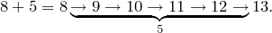
Para dos números cualquiera y  es lo mismo: su suma es
el número al que llegas después de contar veces a partir de
.
es lo mismo: su suma es
el número al que llegas después de contar veces a partir de
.
¿Y multiplicar? Si sumar era ir contando de uno en uno
veces a partir de , multiplicar es sumar
a sí mismo veces. En vez de ir contando vamos sumando:
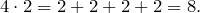
El punto centrado del 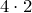 es otra forma de decir multiplica, igual que el aspa , o sea que 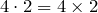. Lo usamos mucho más, porque es menos aparatoso y queda mejor.
¿Y si en vez de sumar consigo mismo lo multiplicamos? Es algo que hacemos tan a menudo que también tiene un nombre: lo llamamos potenciación, o "elevar a". Decimos 2 elevado a 4 y lo escribimos 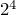, que quiere decir multiplicar a 2 por sí mismo 4 veces:
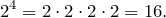
En general, para dos números y ,
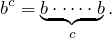
A se le llama base, a exponente, y 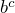 se llama
potencia.
Multiplicar potencias de la misma base
Lo único que hay que hacer cuando se multiplican potencias de la misma base es sumar los exponentes. Multiplicar 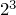 por 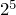 es multiplicar 2 por sí mismo un total de 8 veces, lo mismo que hacer 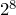:
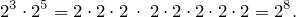
En general multiplicar por 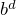 es lo mismo que hacer
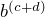, o sea elevar a la suma de y 
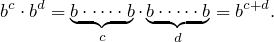
Elevar a un número negativo
Tal como hemos definido las potencias no tiene sentido hablar
de exponentes negativos: ¿qué querría decir 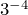? Desde
luego no podemos pretender que sea multiplicar 3 por sí mismo
-4 veces. Por eso he ido con cuidado y he puesto todos los
ejemplos con exponentes positivos, y cuando he querido
generalizar y he puesto letras no he dicho nunca "un número
cualquiera" (aunque para ser completamente correcto
debería haber avisado de que tenía que ser positivo).
El caso es que para seguir jugando cuando el exponente sea negativo tenemos que decidir qué quiere decir. Una forma de hacerlo es agarrarnos a la regla de la multiplicación que acabamos de encontrar y decidir que, sea lo que sea , tiene que seguir cumpliéndola, de forma cuando multipliquemos por otra potencia de base 3 el resultado tiene que ser sumar (en este caso restar) los exponentes. Por ejemplo:
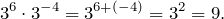
Esto nos da una buena pista de por dónde van los tiros. Cuando le quito 4 al 6 de 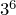 estoy diciendo que quiero multiplicar 3 por sí mismo 2 veces en vez de 6: pero esto es lo mismo que multiplicar 6 veces, y luego dividir cuatro veces:
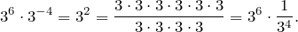
Para 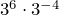 sea igual que 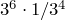 tiene que ser:
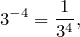
así que ya tenemos una buena definición de . En
general, si y son números positivos y es mayor
que ,
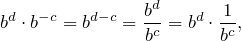
y por lo tanto
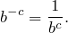
Con lo que tenemos una definición la mar de bonita de una potencia de exponente negativo.
¿Qué pasa cuando el exponente es cero?
No es nada obvio, porque tampoco podemos usar la primera definición de potencia: ¿qué querría decir que 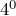 es 4 multiplicado por 4 ninguna vez?
Pero sí podemos hacer lo mismo que hemos hecho para los exponentes negativos: nos agarramos a la regla para multiplicar exponentes de la misma base, y buscamos una forma de definir que no rompa nada.
Elevemos 4 a un número cualquiera, por ejemplo 3; como 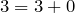, se tiene que cumplir que
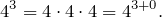
Pero resulta que queremos que la regla de la multiplicación siga funcionando
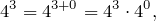
y para que esto sea cierto tiene que ser 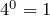. En general, y como este argumento vale con cualquier base, la definición que necesitamos es
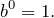
Elevar una potencia a otra potencia
Elevar a la 4 es multiplicar 2 por sí mismo 3 veces, y después multiplicar el resultado por sí mismo 4 veces; en total habremos multiplicado 2 por sí mismo 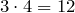 veces:
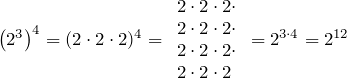
En general, elevar a es lo mismo que elevar a
,
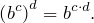
Potencias de exponente fraccional
Poco a poco vamos incorporando tipos de números a nuestros exponentes. ¿Qué quiere decir 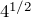? No tiene sentido decir que es 4 multiplicado por sí mismo media vez.
Hasta ahora hemos tenido éxito buscando formas de que los
números que introducíamos respetaran las reglas que ya
teníamos, así que vamos a probar de nuevo, esta vez con la
nueva regla. No sabemos qué es , pero queremos que
si lo elevamos a un número podamos multiplicar 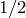 por
, y las cosas funcionen. Vamos a probar con :
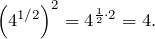
Ahí tenemos algo muy parecido a una definición de : es un número que, cuando lo elevamos a 2, nos devuelve el 4. Otro nombre para este número es la raiz cuadrada de 4, y es 2:
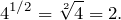
Pongamos otro ejemplo. El número 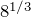 tiene que ser tal que cuando lo elevamos a 3 dé 8,
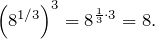
El número que elevado a 3 da 8 también se llama la raíz cúbica de 8, y vuelve a ser 2:
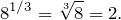
En general, como queremos que se cumpla la regla de la potencia de una potencia, tiene que ser que
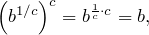
por lo que 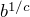 es un número que cuando lo elevamos a
nos da . Este número es la raíz de orden de ,
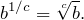
Buscando una definición de potencia de exponente fraccional hemos dado con las raíces, y se nos ha colado de refilón una de las operaciones inversas de la potenciación. La otra son los logaritmos.
blog comments powered by Disqus